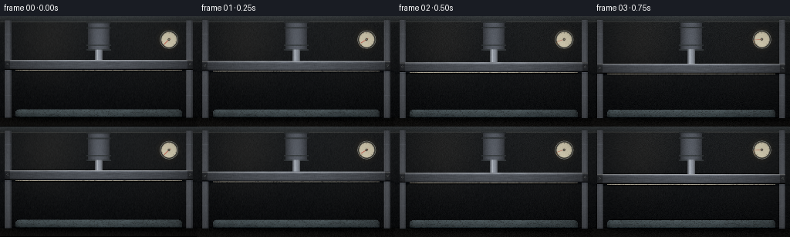

CODING AGENTS AS PIXEL WORLD MODELS
traex/DeepSeek-V4.1-Flash · mechanics_0021
点击播放 · 原生 RGB 像素
逐轮保存的候选
回放视频、检查图与代码变化。
每份候选均可单独播放。实际图片检查记录在下方工具轨迹中。
候选 01播放与检查图
点击播放 · 原生 RGB 像素

展开代码变化
--- 上一保存版本
+++ 本次保存版本
@@ -0,0 +1,415 @@
+from pathlib import Path
+
+import numpy as np
+from PIL import Image, ImageDraw, ImageFilter
+from scipy.ndimage import gaussian_filter
+
+import artifact_io
+
+
+W, H = 256, 144
+FRAMES = 20
+FPS = 4.0
+SS = 3
+HW, HH = W * SS, H * SS
+CASE_DIR = Path(__file__).resolve().parent
+
+
+def smoothstep(edge0, edge1, value):
+ t = np.clip((value - edge0) / (edge1 - edge0), 0.0, 1.0)
+ return t * t * (3.0 - 2.0 * t)
+
+
+def normalized(field):
+ low, high = np.percentile(field, (1.0, 99.0))
+ return np.clip((field - low) / (high - low + 1e-7), 0.0, 1.0).astype(np.float32)
+
+
+def build_texture():
+ rng = np.random.default_rng(4117)
+ fine = normalized(gaussian_filter(rng.standard_normal((HH, HW)), 1.15))
+ cells = normalized(gaussian_filter(rng.standard_normal((HH, HW)), 3.4))
+ broad = normalized(gaussian_filter(rng.standard_normal((HH, HW)), 12.0))
+ streak = normalized(gaussian_filter(rng.standard_normal((HH, HW)), (0.7, 8.0)))
+ grain = rng.standard_normal((H, W)).astype(np.float32)
+ return fine, cells, broad, streak, grain
+
+
+FINE, CELLS, BROAD, STREAK, GRAIN = build_texture()
+YY, XX = np.mgrid[0:HH, 0:HW].astype(np.float32)
+X = (XX + 0.5) / SS
+Y = (YY + 0.5) / SS
+
+
+def base_background():
+ yn = Y / H
+ xn = X / W
+ top = np.array([0.115, 0.126, 0.135], dtype=np.float32)
+ bottom = np.array([0.028, 0.032, 0.038], dtype=np.float32)
+ blend = (yn ** 0.72)[..., None]
+ image = top * (1.0 - blend) + bottom * blend
+
+ wall_light = np.exp(-((X - 62.0) / 42.0) ** 2 - ((Y - 28.0) / 55.0) ** 2)
+ cool_light = np.exp(-((X - 204.0) / 58.0) ** 2 - ((Y - 36.0) / 70.0) ** 2)
+ image += (0.045 * wall_light + 0.018 * cool_light)[..., None] * np.array(
+ [1.0, 0.84, 0.65], dtype=np.float32
+ )
+
+ floor = smoothstep(131.0, 134.0, Y)
+ floor_color = np.array([0.071, 0.067, 0.062], dtype=np.float32)
+ floor_color = floor_color[None, None, :] * (
+ 0.75 + 0.22 * (1.0 - xn[..., None]) + 0.06 * BROAD[..., None]
+ )
+ image = image * (1.0 - floor[..., None]) + floor_color * floor[..., None]
+
+ beam_mask = (Y >= 0.0) & (Y <= 8.4)
+ beam_shade = 0.16 + 0.11 * (1.0 - Y / 9.0)
+ beam_color = np.stack(
+ (beam_shade * 0.92, beam_shade, beam_shade * 1.04), axis=-1
+ ).astype(np.float32)
+ image = np.where(beam_mask[..., None], beam_color, image)
+ beam_edge = np.exp(-((Y - 8.1) / 0.75) ** 2)
+ image += beam_edge[..., None] * np.array([0.09, 0.085, 0.075], dtype=np.float32)
+ return image.astype(np.float32)
+
+
+BACKGROUND = base_background()
+
+
+def draw_columns(image):
+ for center in (10.5, 245.5):
+ local = X - center
+ mask = (np.abs(local) <= 4.2) & (Y >= 6.0) & (Y <= 133.0)
+ radial = np.clip(1.0 - (local / 4.5) ** 2, 0.0, 1.0)
+ vertical = 0.22 + 0.13 * radial + 0.035 * (1.0 - Y / H)
+ color = np.stack(
+ (vertical * 0.91, vertical * 0.95, vertical * 1.02), axis=-1
+ ).astype(np.float32)
+ image = np.where(mask[..., None], color, image)
+
+ left_edge = np.exp(-((X - (center - 3.2)) / 0.55) ** 2)
+ right_edge = np.exp(-((X - (center + 3.1)) / 0.65) ** 2)
+ image += (0.07 * left_edge - 0.035 * right_edge)[..., None] * mask[..., None]
+
+ for ring_y in (24.0, 64.0, 104.0):
+ ring = np.exp(-((Y - ring_y) / 0.7) ** 2) * mask
+ image += ring[..., None] * np.array([0.035, 0.038, 0.043], dtype=np.float32)
+ return image
+
+
+def draw_cylinder(image, plate_top):
+ body_mask = (X >= 114.0) & (X <= 142.0) & (Y >= 8.0) & (Y <= 45.5)
+ body_u = np.clip((X - 114.0) / 28.0, 0.0, 1.0)
+ body_shade = 0.19 + 0.18 * np.sin(np.pi * body_u) + 0.045 * (1.0 - Y / 48.0)
+ body_color = np.stack(
+ (body_shade * 0.88, body_shade * 0.93, body_shade * 1.02), axis=-1
+ ).astype(np.float32)
+ image = np.where(body_mask[..., None], body_color, image)
+
+ for ring_y in (9.0, 16.0, 38.5, 44.5):
+ ring = (
+ (Y >= ring_y - 1.0)
+ & (Y <= ring_y + 1.0)
+ & (X >= 112.5)
+ & (X <= 143.5)
+ )
+ ring_light = 0.17 + 0.07 * np.sin(np.pi * np.clip((X - 112.5) / 31.0, 0.0, 1.0))
+ ring_color = np.stack((ring_light * 0.92, ring_light, ring_light * 1.05), axis=-1)
+ image = np.where(ring[..., None], ring_color.astype(np.float32), image)
+
+ shaft_mask = (X >= 123.0) & (X <= 133.0) & (Y >= 44.0) & (Y <= plate_top + 1.0)
+ shaft_u = np.clip((X - 123.0) / 10.0, 0.0, 1.0)
+ shaft_shade = 0.26 + 0.32 * np.clip(np.sin(np.pi * shaft_u), 0.0, 1.0) ** 0.65
+ shaft_color = np.stack(
+ (shaft_shade * 0.94, shaft_shade * 0.98, shaft_shade * 1.04), axis=-1
+ )
+ image = np.where(shaft_mask[..., None], shaft_color.astype(np.float32), image)
+
+ highlight = np.exp(-((X - 126.2) / 0.75) ** 2) * shaft_mask
+ image += highlight[..., None] * np.array([0.17, 0.17, 0.16], dtype=np.float32)
+ return image
+
+
+def draw_mattress(image, pressure):
+ top_y = 69.0 + 34.0 * pressure
+ bottom_y = 132.0
+ half_width = 108.0 + 3.2 * pressure
+ left = 128.0 - half_width
+ right = 128.0 + half_width
+
+ corner = 5.0
+ dx = np.maximum(np.maximum(left + corner - X, X - (right - corner)), 0.0)
+ dy = np.maximum(bottom_y - corner - Y, 0.0)
+ inside = (
+ (X >= left)
+ & (X <= right)
+ & (Y >= top_y)
+ & (Y <= bottom_y)
+ & (np.sqrt(dx * dx + dy * dy) <= corner)
+ )
+ top_corner = (
+ (X >= left)
+ & (X <= right)
+ & (Y >= top_y)
+ & (Y <= top_y + 2.5)
+ )
+ inside |= top_corner
+
+ v = np.clip((Y - top_y) / (bottom_y - top_y), 0.0, 1.0)
+ u = np.clip((X - left) / (right - left), 0.0, 1.0)
+ texture_y = np.clip(v * (HH - 1), 0, HH - 1).astype(np.int32)
+ texture_x = np.clip(XX, 0, HW - 1).astype(np.int32)
+ fine = FINE[texture_y, texture_x]
+ cells = CELLS[texture_y, texture_x]
+ broad = BROAD[texture_y, texture_x]
+
+ layer_edge = 0.52 + 0.018 * np.sin(X * 0.095) + 0.028 * (broad - 0.5)
+ lower_layer = smoothstep(layer_edge - 0.018, layer_edge + 0.018, v)
+
+ top_foam = np.array([0.82, 0.79, 0.71], dtype=np.float32)
+ base_foam = np.array([0.37, 0.43, 0.45], dtype=np.float32)
+ tone = 0.93 + 0.10 * broad[..., None]
+ color = (
+ top_foam[None, None, :] * (1.0 - lower_layer[..., None])
+ + base_foam[None, None, :] * lower_layer[..., None]
+ ) * tone
+
+ pore = smoothstep(0.55, 0.78, fine) * smoothstep(0.22, 0.58, cells)
+ pore += 0.55 * smoothstep(0.63, 0.82, cells) * smoothstep(0.35, 0.62, fine)
+ pore = np.clip(pore, 0.0, 1.0)
+ color *= (1.0 - 0.28 * pore)[..., None]
+ color += (pore * 0.055)[..., None] * np.array([0.36, 0.27, 0.20], dtype=np.float32)
+
+ edge_distance = np.minimum(X - left, right - X)
+ edge_light = 0.72 + 0.28 * smoothstep(0.0, 7.5, edge_distance)
+ vertical_light = 0.91 - 0.18 * v + 0.08 * (1.0 - u)
+ light = edge_light * vertical_light
+ light += 0.055 * (broad - 0.5)
+
+ contact_shadow = 1.0 - (0.23 + 0.12 * pressure) * np.exp(-np.maximum(Y - top_y, 0.0) / 5.2)
+ bottom_shadow = 1.0 - 0.22 * smoothstep(bottom_y - 9.0, bottom_y, Y)
+ light *= contact_shadow * bottom_shadow
+
+ crease_strength = smoothstep(0.28, 1.0, pressure)
+ crease_total = np.zeros_like(X)
+ for center_u, amp, phase in (
+ (0.115, 0.065, 0.4),
+ (0.235, 0.050, 2.1),
+ (0.785, 0.055, 3.7),
+ (0.895, 0.070, 5.1),
+ ):
+ center_x = left + (right - left) * center_u
+ wiggle = 1.4 * np.sin(v * 18.0 + phase) + 0.9 * np.sin(v * 34.0 + phase * 0.6)
+ crease = np.exp(-((X - center_x - wiggle) / (1.0 + 0.6 * pressure)) ** 2)
+ crease_total += crease * amp
+ crease_total -= 0.6 * np.exp(
+ -((X - center_x - wiggle - 1.5) / (1.2 + 0.7 * pressure)) ** 2
+ ) * amp
+ light += crease_total * crease_strength * (0.25 + 0.75 * v)
+
+ color *= light[..., None]
+ color = np.where(inside[..., None], color, image)
+
+ rim = np.exp(-((Y - top_y) / 0.65) ** 2) * (X >= left) * (X <= right)
+ color += rim[..., None] * np.array([0.05, 0.045, 0.035], dtype=np.float32)
+ lower_rim = np.exp(-((Y - bottom_y) / 0.8) ** 2) * (X >= left) * (X <= right)
+ color -= lower_rim[..., None] * np.array([0.055, 0.050, 0.045], dtype=np.float32)
+
+ floor_shadow = (
+ np.exp(-((X - 128.0) / 125.0) ** 6 - ((Y - 133.2) / 5.5) ** 2)
+ * (Y > 131.0)
+ )
+ color -= floor_shadow[..., None] * np.array([0.055, 0.050, 0.045], dtype=np.float32)
+ return np.clip(color, 0.0, 1.0).astype(np.float32), top_y
+
+
+def draw_plate(image, top_y, pressure):
+ plate_left, plate_right = 6.5, 249.5
+ plate_top = top_y - 11.5
+ plate_bottom = top_y + 1.5
+ mask = (
+ (X >= plate_left)
+ & (X <= plate_right)
+ & (Y >= plate_top)
+ & (Y <= plate_bottom)
+ )
+ pu = np.clip((X - plate_left) / (plate_right - plate_left), 0.0, 1.0)
+ pv = np.clip((Y - plate_top) / (plate_bottom - plate_top), 0.0, 1.0)
+ edge_light = 0.27 + 0.16 * np.clip(np.sin(np.pi * pu), 0.0, 1.0) ** 0.5
+ vertical = 0.72 + 0.35 * np.exp(-((pv - 0.08) / 0.12) ** 2) - 0.30 * smoothstep(0.72, 1.0, pv)
+ brushed = 0.92 + 0.16 * STREAK
+ metal = edge_light * vertical * brushed
+ color = np.stack(
+ (metal * 0.91, metal * 0.96, metal * 1.04), axis=-1
+ ).astype(np.float32)
+
+ cap_width = 7.0
+ cap = (X < plate_left + cap_width) | (X > plate_right - cap_width)
+ color *= np.where(cap, 0.70, 1.0)[..., None]
+ color += (
+ np.exp(-((Y - (plate_top + 0.7)) / 0.55) ** 2)
+ * (X >= plate_left)
+ * (X <= plate_right)
+ )[..., None] * np.array([0.22, 0.21, 0.19], dtype=np.float32)
+ color -= (
+ np.exp(-((Y - (plate_bottom - 0.45)) / 0.55) ** 2)
+ * (X >= plate_left)
+ * (X <= plate_right)
+ )[..., None] * np.array([0.16, 0.16, 0.15], dtype=np.float32)
+
+ shadow = np.exp(
+ -((X - 128.0) / 123.0) ** 8 - ((Y - (plate_bottom + 1.0)) / 1.3) ** 2
+ )
+ image -= shadow[..., None] * np.array([0.075, 0.070, 0.062], dtype=np.float32)
+ image = np.where(mask[..., None], color, image)
+
+ overlay = Image.new("RGBA", (HW, HH), (0, 0, 0, 0))
+ draw = ImageDraw.Draw(overlay)
+ for bolt_x in (plate_left + 3.4, plate_right - 3.4):
+ cx, cy = bolt_x * SS, (plate_top + 5.8) * SS
+ radius = 1.35 * SS
+ draw.ellipse(
+ (cx - radius, cy - radius, cx + radius, cy + radius),
+ fill=(45, 48, 50, 255),
+ outline=(132, 135, 134, 255),
+ width=max(1, SS // 2),
+ )
+ overlay = overlay.filter(ImageFilter.GaussianBlur(0.25 * SS))
+ image = composite_rgba(image, overlay)
+ return image, plate_top, plate_bottom
+
+
+def draw_gauge(image, pressure):
+ overlay = Image.new("RGBA", (HW, HH), (0, 0, 0, 0))
+ draw = ImageDraw.Draw(overlay)
+ cx, cy, radius = 219.0 * SS, 31.0 * SS, 12.0 * SS
+ draw.ellipse(
+ (cx - radius, cy - radius, cx + radius, cy + radius),
+ fill=(31, 34, 35, 255),
+ outline=(128, 132, 130, 255),
+ width=max(1, SS),
+ )
+ inner = radius - 2.0 * SS
+ draw.ellipse(
+ (cx - inner, cy - inner, cx + inner, cy + inner),
+ fill=(211, 207, 188, 255),
+ outline=(79, 81, 78, 255),
+ width=max(1, SS // 2),
+ )
+
+ start_angle = 135.0
+ sweep = 270.0
+ for index in range(11):
+ theta = np.deg2rad(start_angle + sweep * index / 10.0)
+ inner_r = radius - (4.1 if index % 5 == 0 else 3.2) * SS
+ outer_r = radius - 2.15 * SS
+ x0, y0 = cx + np.cos(theta) * inner_r, cy + np.sin(theta) * inner_r
+ x1, y1 = cx + np.cos(theta) * outer_r, cy + np.sin(theta) * outer_r
+ draw.line((x0, y0, x1, y1), fill=(54, 55, 52, 255), width=max(1, SS // 2))
+
+ needle_angle = start_angle + sweep * pressure
+ needle_theta = np.deg2rad(needle_angle)
+ needle_len = radius - 3.1 * SS
+ nx = cx + np.cos(needle_theta) * needle_len
+ ny = cy + np.sin(needle_theta) * needle_len
+ tail = 2.0 * SS
+ tx = cx - np.cos(needle_theta) * tail
+ ty = cy - np.sin(needle_theta) * tail
+ draw.line((tx, ty, nx, ny), fill=(179, 47, 37, 255), width=max(1, int(0.75 * SS)))
+ hub = 1.5 * SS
+ draw.ellipse((cx - hub, cy - hub, cx + hub, cy + hub), fill=(48, 50, 49, 255))
+ draw.ellipse(
+ (cx - 0.45 * SS, cy - 0.45 * SS, cx + 0.45 * SS, cy + 0.45 * SS),
+ fill=(180, 178, 163, 255),
+ )
+
+ arc_box = (
+ cx - (radius - 1.1 * SS),
+ cy - (radius - 1.1 * SS),
+ cx + (radius - 1.1 * SS),
+ cy + (radius - 1.1 * SS),
+ )
+ if pressure > 0.015:
+ draw.arc(
+ arc_box,
+ start=start_angle,
+ end=start_angle + sweep * pressure,
+ fill=(187, 111, 38, 235),
+ width=max(1, SS // 2),
+ )
+ overlay = overlay.filter(ImageFilter.GaussianBlur(0.32 * SS))
+ image = composite_rgba(image, overlay)
+
+ glow = Image.new("RGBA", (HW, HH), (0, 0, 0, 0))
+ glow_draw = ImageDraw.Draw(glow)
+ glow_draw.ellipse(
+ (
+ cx - radius * 1.3,
+ cy - radius * 1.3,
+ cx + radius * 1.3,
+ cy + radius * 1.3,
+ ),
+ fill=(193, 151, 81, 20),
+ )
+ glow = glow.filter(ImageFilter.GaussianBlur(3.0 * SS))
+ return composite_rgba(image, glow)
+
+
+def composite_rgba(image, overlay):
+ rgba = np.asarray(overlay, dtype=np.float32) / 255.0
+ alpha = rgba[..., 3:4]
+ return image * (1.0 - alpha) + rgba[..., :3] * alpha
+
+
+def render_frame(frame_index):
+ t = frame_index / (FRAMES - 1)
+ pressure = float(np.clip(t ** 1.04, 0.0, 1.0))
+ image = BACKGROUND.copy()
+ image = draw_columns(image)
+ image, top_y = draw_mattress(image, pressure)
+ image = draw_cylinder(image, top_y - 11.5)
+ image, plate_top, plate_bottom = draw_plate(image, top_y, pressure)
+ image = draw_gauge(image, pressure)
+
+ bloom_source = np.clip(image - 0.58, 0.0, None)
+ bloom = np.stack(
+ [gaussian_filter(bloom_source[..., c], 4.0) for c in range(3)], axis=-1
+ )
+ image += bloom * 0.34
+
+ vignette = 1.0 - 0.20 * (
+ ((X - W / 2) / (W / 2)) ** 2 + ((Y - H / 2) / (H / 2)) ** 2
+ )
+ image *= np.clip(vignette, 0.68, 1.0)[..., None]
+
+ temporal = gaussian_filter(
+ np.random.default_rng(9000 + frame_index).standard_normal((H, W)).astype(np.float32),
+ 0.45,
+ )
+ grain = np.repeat(np.repeat(0.74 * GRAIN + 0.26 * temporal, SS, axis=0), SS, axis=1)
+ image += grain[..., None] * 0.012
+ image = np.clip(image, 0.0, 1.0)
+ image = np.power(image, 0.94)
+
+ highres = Image.fromarray((image * 255.0 + 0.5).astype(np.uint8))
+ zoom = 1.0 + 0.030 * t
+ cx, cy = 128.0, 72.5
+ left = cx - W / (2.0 * zoom)
+ top = cy - H / (2.0 * zoom)
+ output = highres.transform(
+ (W, H),
+ Image.Transform.AFFINE,
+ (SS / zoom, 0.0, left * SS, 0.0, SS / zoom, top * SS),
+ resample=Image.Resampling.BICUBIC,
+ )
+ return np.asarray(output, dtype=np.uint8)
+
+
+def main():
+ frames = np.stack([render_frame(index) for index in range(FRAMES)])
+ artifact_io.save(frames, CASE_DIR)
+ print(f"generated {frames.shape} at {FPS:g} fps")
+
+
+if __name__ == "__main__":
+ main()
候选 02播放与检查图
点击播放 · 原生 RGB 像素


展开代码变化
--- 上一保存版本
+++ 本次保存版本
@@ -138,22 +138,25 @@
right = 128.0 + half_width
corner = 5.0
- dx = np.maximum(np.maximum(left + corner - X, X - (right - corner)), 0.0)
- dy = np.maximum(bottom_y - corner - Y, 0.0)
- inside = (
+ body_rect = (
(X >= left)
& (X <= right)
& (Y >= top_y)
& (Y <= bottom_y)
- & (np.sqrt(dx * dx + dy * dy) <= corner)
- )
- top_corner = (
- (X >= left)
- & (X <= right)
- & (Y >= top_y)
- & (Y <= top_y + 2.5)
- )
- inside |= top_corner
+ )
+ corner_zone = (
+ (Y > bottom_y - corner)
+ & (
+ ((X < left + corner) & (X >= left))
+ | ((X > right - corner) & (X <= right))
+ )
+ )
+ corner_cx = np.where(X < 128.0, left + corner, right - corner)
+ corner_cy = bottom_y - corner
+ outside_corner = (
+ (X - corner_cx) ** 2 + (Y - corner_cy) ** 2 > corner**2
+ )
+ inside = body_rect & ~(corner_zone & outside_corner)
v = np.clip((Y - top_y) / (bottom_y - top_y), 0.0, 1.0)
u = np.clip((X - left) / (right - left), 0.0, 1.0)
候选 03播放与检查图
候选 04播放与检查图
可观测工具轨迹
实际执行的命令与返回图片。
命令 1exit 0
/bin/bash -c "pwd && rg --files -g '"'!*node_modules*'"' | sed -n '1,120p'"
命令 2exit 0
/bin/bash -c 'cat prompt.txt'
命令 3exit 0
/bin/bash -c 'cat GENERATION_RULES.md'
命令 4exit 0
/bin/bash -c 'cat task_spec.json'
命令 5exit 0
/bin/bash -c 'cat artifact_io.py'
命令 6exit 0
/bin/bash -c "sed -n '1,240p' player_template.html"
命令 7exit 0
/bin/bash -c "python - <<'PY' import importlib.util for m in ['numpy','PIL','imageio','cv2','scipy']: print(m, bool(importlib.util.find_spec(m))) PY"
命令 8exit 0
/bin/bash -c 'git status --short'
命令 9exit 1
/bin/bash -c 'python generate.py'
命令 10exit 1
/bin/bash -c 'python generate.py'
命令 11exit 1
/bin/bash -c 'python generate.py'
命令 12exit 0
/bin/bash -c 'python generate.py'
命令 13exit 0
/bin/bash -c 'command -v chafa || command -v viu || command -v jp2 || true'
命令 14exit 0
/bin/bash -c 'du -h pixels.npz index.html inspection.png frames/*.png | tail -n 8'
命令 15exit 0
/bin/bash -c "python - <<'PY' from PIL import Image import numpy as np for name in ['frames/00.png','frames/04.png','frames/09.png','frames/14.png','frames/19.png']: im=np.asarray(Image.open(name)).astype(float)/255 print(name, 'mean', im.mean((0,1)).round(3), 'std', im.std((0,1)).round(3), 'range', im.min().round(3), im.max().round(3)) PY"
命令 16exit 0
/bin/bash -c "python - <<'PY'
from PIL import Image
im=Image.open('inspection.png')
im.resize((1024, 682), Image.Resampling.NEAREST).save('.tmp/inspection_large.png')
PY"命令 17exit 0
/bin/bash -c "python - <<'PY'
from PIL import Image
import numpy as np
im=np.asarray(Image.open('inspection.png'))
# Print a compact luminance/color map of the first actual frame as ANSI half blocks.
f=np.asarray(Image.open('frames/00.png')).astype(float)
# crop 0:256x144; 64 columns x 36 half-block rows
for yy in range(0,144,4):
line=[]
for xx in range(0,256,4):
block=f[yy:yy+4,xx:xx+4]
rgb=block.mean((0,1)).astype(int)
# 232-255 grayscale-like palette approximation with color classification
if rgb.max()<38: code=16
elif rgb[0]>rgb[2]+20: code=130
elif rgb[2]>rgb[0]+12: code=67
elif rgb.mean()<65: code=236
elif rgb.mean()<100: code=242
elif rgb.mean()<140: code=247
elif rgb.mean()<180: code=250
elif rgb.mean()<215: code=253
else: code=255
line.append(f'\\x1b[48;5;{code}m ')
print(''.join(line)+'\\x1b[0m')
PY"命令 18exit 0
/bin/bash -c "python - <<'PY'
from PIL import Image
import numpy as np
for idx in [0,9,19]:
a=np.asarray(Image.open(f'frames/{idx:02d}.png')).astype(float)
# rows: count pixels with foam-like warm brightness in central area, plate-like metallic rows
lum=a.mean(2)
print('\\nFRAME',idx)
for y in range(16,136,8):
strip=lum[y:y+8,30:226]
print(f'{y:3d}', f'{strip.mean():5.1f}', 'cols', ''.join(' .:-=+*#%@'[min(9,int(v/26))] for v in strip.mean(0)[::4]))
PY"命令 19exit 0
/bin/bash -c "python - <<'PY'
from PIL import Image, ImageEnhance, ImageOps
import numpy as np
chars='@%#*+=-:. '
for idx in [0,9,19]:
im=Image.open(f'frames/{idx:02d}.png').convert('L')
im=ImageOps.autocontrast(im)
# preserve aspect roughly in monospace
im=im.resize((80,45))
a=np.asarray(im)
print('\\nFRAME',idx)
for row in a:
print(''.join(chars[min(9,int(v)*10//256)] for v in row))
PY"命令 20exit 0
/bin/bash -c "python - <<'PY'
from PIL import Image
import numpy as np
a=np.asarray(Image.open('frames/00.png')).astype(float)
for y,x in [(70,128),(80,128),(90,128),(100,128),(110,128),(120,128),(125,128),(56,128),(61,128),(64,128)]:
print(y,x,a[y,x])
PY"命令 21exit 0
/bin/bash -c 'python generate.py'
命令 22exit 0
/bin/bash -c "python - <<'PY'
from PIL import Image, ImageOps
import numpy as np
chars='@%#*+=-:. '
for idx in [0,9,19]:
im=ImageOps.autocontrast(Image.open(f'frames/{idx:02d}.png').convert('L')).resize((80,45))
print('\\nFRAME',idx)
for row in np.asarray(im):
print(''.join(chars[min(9,int(v)*10//256)] for v in row))
PY"命令 23exit 0
/bin/bash -c "python - <<'PY'
from PIL import Image
import numpy as np
for idx in [0,9,19]:
a=np.asarray(Image.open(f'frames/{idx:02d}.png')).astype(float)
print('\\nframe',idx)
for y in [64,68,72,80,90,100,110,120,125,128,132]:
print(y, a[y,40:217].mean(0).round(1), 'center', a[y,128].round(1))
PY"命令 24exit 0
/bin/bash -c "python - <<'PY'
from pathlib import Path
import numpy as np
from PIL import Image
files=sorted(Path('frames').glob('*.png'))
arr=np.stack([np.asarray(Image.open(p).convert('RGB')) for p in files])
print('count',len(files),'shape',arr.shape,'dtype',arr.dtype)
print('finite',np.isfinite(arr).all(),'range',int(arr.min()),int(arr.max()))
print('unique colors',len(np.unique(arr.reshape(-1,3),axis=0)))
# Interior mattress band shifts downward; report mean change and changed pixel ratio.
d=np.abs(arr[1:].astype(np.int16)-arr[:-1].astype(np.int16)).mean((1,2,3))
changed=(arr[1:]"'!=arr[:-1]).any(3).mean((1,2))
print('"'adjacent mean abs diff min/mean/max',d.min().round(3),d.mean().round(3),d.max().round(3))
print('changed fraction min/mean/max',changed.min().round(4),changed.mean().round(4),changed.max().round(4))
print('frame means',arr.mean((1,2,3)).round(2).tolist())
PY"命令 25exit 0
/bin/bash -c 'ls -lh generate.py pixels.npz index.html inspection.png transition_check.png task_spec.json prompt.txt && python -m py_compile generate.py'
保存候选 4 份；完成命令 25 次；可验证图片返回 0 张。原始 API 响应与完整日志保留在本地。